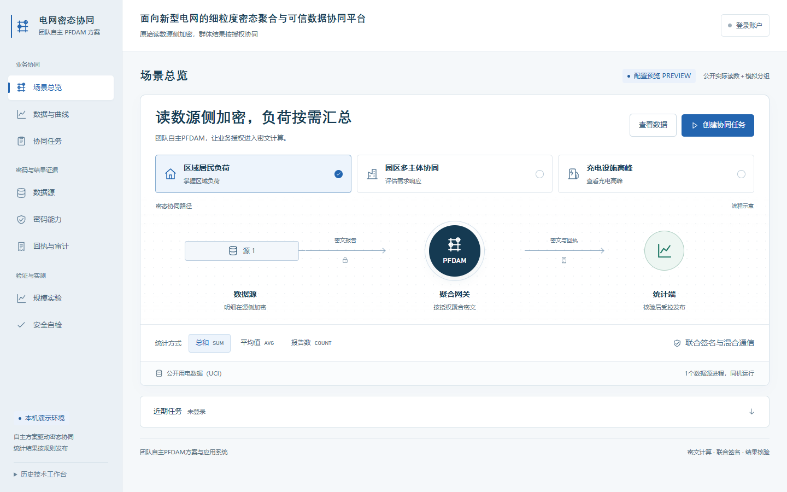

三项核心技术优势
授权直接约束密文计算
标签授权与配对联合检查直接决定参与计算的密文集合，任务绑定数据版本、时段、参与源和算法配置，使申请范围与实际处理对象对应。
查看角色架构精确统计与发布控制协同
完整固定分组、登记规模、完整上报与共享历史统一管理结果提供。页面、接口与导出执行同一规则，保留精确统计值与清晰的发布依据。
查看发布流程业务指标有据可核
授权、快照、回执、结果与发布决定签名关联。评审可从16份统计端签名输入精确复算园区指标，沿业务结果追溯计算窗口与来源。
查看证据关系
实际工作台截图；历史结果明确标识为REPLAY，配置预览为PREVIEW，新任务执行为REAL。
从密态统计到可核验的园区响应指标
300个合成输入计量点、150个授权参与点、三个同机独立Source进程，完成三个参考日与一个事件日的16个密态窗口。四项指标分别回答负荷降低多少、相对变化多大、窗口能量相差多少及参与覆盖是否完整，数值均可由签名输入复算。
160.47 kW平均降负荷
10.28%相对三日参考变化
160.47 kWh一小时窗口能量差
100%有效覆盖
合成输入预设10%响应；10.28%是三日参考方法得到的评估值。事件日窗口为2026年10月16日17:00—18:00 UTC。算法、输入条件与评估结果分别记录。
发布保护的效率优势：主配置增量约0.12%
300输入、150授权点主配置的保护组耗时中位数为84.90秒，10次正式任务均达到180秒目标；相对同条件C0密态对照，逐对开销增量中位数为0.10秒、约0.12%。发布控制以很小的实测增量接入完整密态任务。
C0与C1保持相同输入、PFDAM、联合签名、国密增强和三个Source；C1启用发布规则与共享历史，C0为跳过上述发布处理的隔离密态对照。三种规模完成20对正式实验及6对预热，共52次成功REAL任务、832个独立核对窗口。
| 输入／授权点 | 正式配对 | C1 中位秒 | C0 中位秒 | 逐对中位增量 | 构建 |
|---|
| 120／60 | 5 | 45.71 | 44.89 | 0.59秒／1.30% | 44d66a02 |
| 300／150 | 10 | 84.90 | 84.43 | 0.10秒／0.12% | 44d66a02 |
| 900／450 | 5 | 215.90 | 215.84 | 0.26秒／0.12% | 7bdcf87e |
各组为同机串行成对样本；跨规模版本按表标识。逐对差值中位数按每对结果计算。正式、预热及历史尝试记录分列保存；匿名副本仅替换本机用户名和绝对路径。
密码保护落实到真实任务
当前核心250da672完成47项针对性回归及445份证据引用核对；12项功能自检、43项管理与生命周期观察、8组补充向量互通通过。所选本机标准功能按11项向量边界与9组应用控制执行，并关联实际业务任务。
正式业务要求ECDSA与ML-DSA-65同时有效；国密增强另要求SM2。两类业务链路实际协商X25519MLKEM768混合组，TLS内的业务帧采用SM4-GCM增强保护，逐源密文快照与审计检查点使用SM3。
直接服务新型电网与能源数据协同
主配微协同需要按范围形成群体统计，虚拟电厂和需求响应需要连接分散数据持有方，能源数据共享需要可信管控与使用留证。作品将这些需求落实为细粒度密文授权、多源协同、响应评估和签名业务证据，政策需求与技术实现逐项对应。
源码与运行
程序快照包含当前核心源码、已构建工作台、Linux原生库、固定依赖及许可证。建议先阅读运行说明，再在匹配的Ubuntu/WSL环境核验公开证据或启动新的合成数据演示。
打开运行与审阅说明